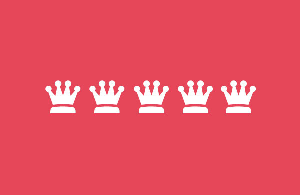
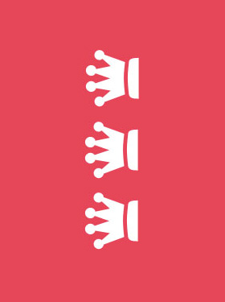
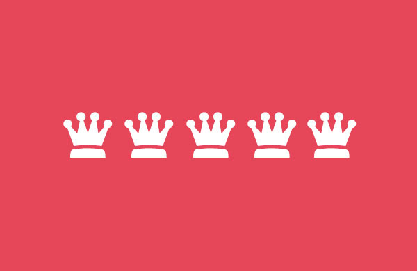
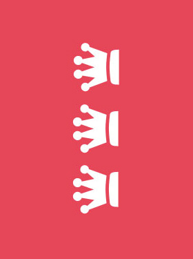

The last two devices may be rotated by hovering and clicking the rotate button.

A slideshow concept where different screenshots are shown on morphing devices. One main element and two additional division are used for the parts of the devices, along with some pseudo-elements and the image anchor.